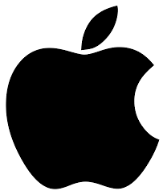

Istnieje wiele dystrybucji ale wyróżniają się dwie rodziny: Debian i Arch. Najpopularniejszą dystrybucją w debianie jest Ubuntu, a najpopularniejszą w Archu jest Manjaro.
Zaletą linuxa jest otwartoźródłowość. Powoduje to że programy na linuxa są przeważnie darmowe.
